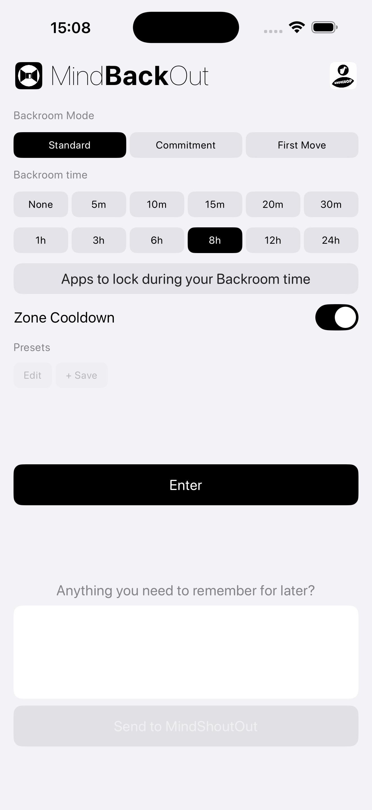
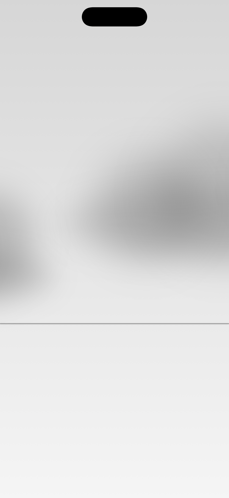

You don't have to fight every distraction.
Sometimes you simply need more distance from it.
MindBackOut creates a temporary boundary between you and the things that keep pulling your attention away.
MINDBEBOP calls this Thought Noise.
MindBackOut is a quiet room outside the rest of your digital life.
You choose what stays outside. While you are inside, those apps remain unavailable.
The goal is not self-control. The goal is to create enough distance for something else to happen.
Sometimes the urge disappears. Sometimes you simply decide to do something else.


You opened your phone without knowing why.
You keep checking the same app.
You want to begin something important but cannot seem to start.
You need a boundary between work and rest.
You need a break from being available to everyone.
The Backroom is a deliberately simple environment designed to create distance from distraction, expectation, and habit.
Nothing is required while you are inside.
You can leave whenever the session ends or whenever the route you selected is complete.
Sometimes creating distance is enough.
Sometimes the next step needs a route.
MindBackOut can work together with MindEntry, MindShoutOut, MindZoneOut, and MindEaseOut.
MINDBEBOP calls this Mental Navigation.
Save your preferred Backroom configurations as reusable Presets.
Each Preset stores:
This makes it easy to return to the same boundary setup with a single tap.
Sometimes the problem is not distraction.
Sometimes the problem is beginning.
With First Move Unlock, selected apps remain unavailable until you complete The First Move inside MindEntry.
The goal is not productivity. The goal is movement.
MindBackOut can work together with MindEntry when stepping away is not enough.
Instead of immediately returning to blocked apps, you can move directly into a structured first-action workflow before unlocking.
This is optional. MindBackOut continues to work as a standalone backroom.
If something still feels active before you enter, you can release it first.
MindEaseOut is an on-device release mode built into MINDBEBOP apps — a quiet passage for setting a thought aside without deleting or analyzing it.
If something is too important to forget but you don’t want to carry it inside, write it down at the door.
MindBackOut can send that text to MindShoutOut as a local reminder — on-device only.
If you feel pressure right after leaving the backroom, enable Zone Cooldown.
When enabled, MindBackOut sends you directly into a MindZoneOut Zone session in None mode after exit — so you can cool down before returning to everything.
You choose when to exit the Zone.
Some routes are easier to follow when interruptions remain outside.
Recipe Protection allows compatible MindEntry Recipes to remain protected while they are active.
When the route is complete, the boundary disappears automatically.
MindBackOut uses Apple's Screen Time framework entirely on your device.
MINDBEBOP does not collect information about the apps you choose to leave outside.
Copyright © 2026 MINDBEBOP — All rights reserved.